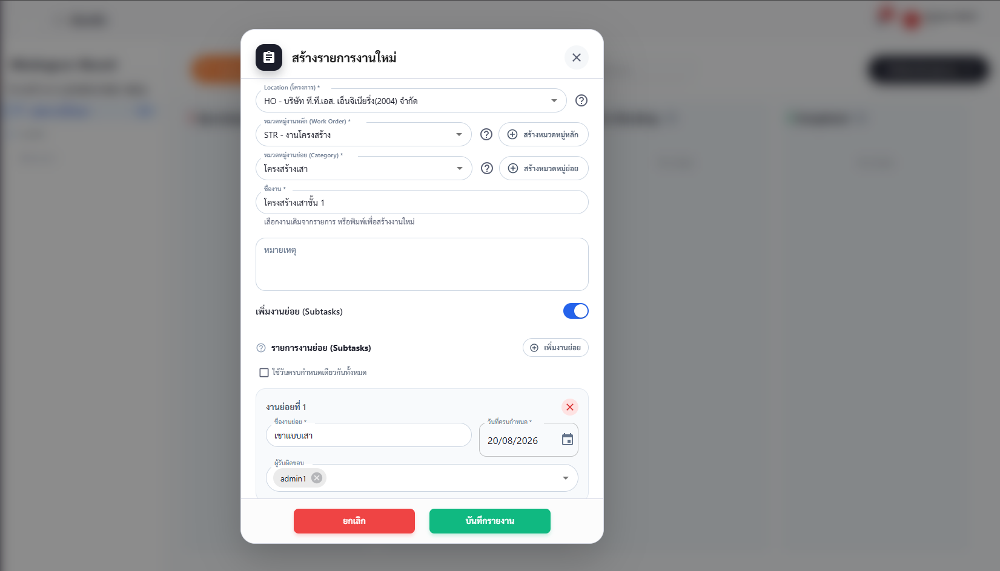
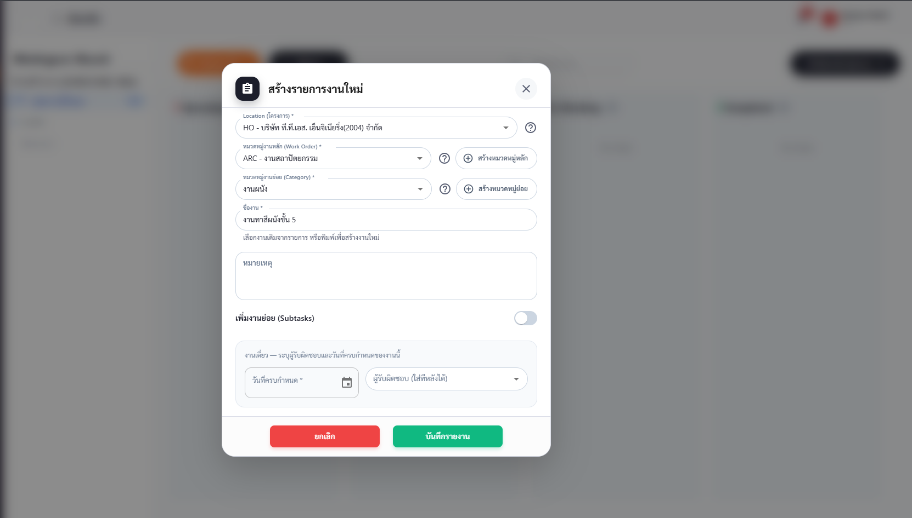

เริ่มต้นยังไงดี?
หน้านี้ไม่ใช่คู่มือของ role ใดๆ — เป็น จุดเริ่มต้นสำหรับทีมหน้างาน (Site) ก่อนเปิดใช้ระบบจริงในโครงการใหม่ 🚀 สามคำถามหลักที่ต้องรู้:
1 · ระบบมีฟีเจอร์อะไรบ้าง ใครลงข้อมูล 🧩
ไล่ดูทีละกล่อง — แต่ละใบบอก "ใครกรอก" แบบสั้น ๆ ไม่ต้องเดา
🗂️WorkspacePM/PD/MD/GOD สร้าง Work Order · ทุก role (ยกเว้น SE/FM) ลงงาน/งานย่อยได้
📸Daily ReportsSE/LD ลงข้อมูลหน้างานจริง + รูปถ่าย · PM/PE/OE/LD ตรวจอนุมัติ
⏰Overtimeเกือบทุก role ลงได้ (ยกเว้น MD/FM)
🪪DC ManagementAM ลงทะเบียนแรงงานรายวัน + ค่าจ้าง
👤Member ManagementAM ลงทะเบียนพนักงานประจำ
💰Wage CalculationAM คำนวณ / อนุมัติ / Export ค่าแรง
🖐️Scan Dataเฉพาะ GOD/AM นำเข้าข้อมูลสแกนนิ้ว
⏱️Work HourGOD/MD/PD/PM/AM ดูสรุปชั่วโมงงาน
🛡️SSO RulesGOD/MD/AM ตั้งค่ากฎประกันสังคม
📅Company Holidaysเกือบทุก role ตั้งวันหยุดได้ (ยกเว้น SE/LD)
🏗️Project ManagementPM สร้าง/แก้โครงการ · FM/AM/GOD เข้าถึงได้
👀Activity Monitorดูอย่างเดียวทุก role ที่ล็อกอิน (ไม่ใช่ log แก้ไขข้อมูล)
อยากดูวิธีใช้แบบละเอียดของฟีเจอร์ไหน กดที่แท็บ บทบาท ▾ บนแถบเมนู แล้วเปิดหน้าของ role ที่ดูแลฟีเจอร์นั้น
2 · Solution: สร้างใบงานจาก Work Order ถึง Subtask 🏗️
4 ขั้นตอน ไล่จากใหญ่ไปเล็ก — หมวดหมู่งานหลัก → หมวดหมู่งานย่อย → งานหลัก → งานย่อย กรอกครบได้ในฟอร์มเดียว ภาพด้านล่างคือของจริงจากระบบ (ตัวอย่างชุด "โครงสร้าง")
| ขั้น | ระดับ | ใครทำได้ | ตัวอย่าง |
|---|
| ① | หมวดหมู่งานหลัก (Work Order) | PM/PD/MD/GOD เท่านั้น | โครงสร้าง |
| ② | หมวดหมู่งานย่อย (Category) | ทุก role ที่เข้าฟอร์มสร้างงานได้ | โครงสร้างเสา |
| ③ | งานหลัก (Task) | ทุก role ที่เข้าฟอร์มสร้างงานได้ | เสาชั้น 1 |
| ④ | งานย่อย (Subtask) | ทุก role ที่เข้าฟอร์มสร้างงานได้ | เข้าแบบเสา |

①→④ กรอกฟอร์มสร้างงานครบทุกระดับในหน้าเดียว — Work Order "งานโครงสร้าง" → Category "โครงสร้างเสา" → Task "โครงสร้างเสาชั้น 1" → Subtask "เข้าแบบเสา"
2.1 แนวทางตั้งชื่อ — เลือกได้ 2 แบบ
ตั้งชื่องานย่อยได้ 2 สไตล์ ระบบไม่บังคับ แต่ควรเลือกให้ตรงกันทั้งโครงการ 👇
| ระดับ |
แบบที่ 1 🧱 ชื่อต่างกัน |
แบบที่ 2 🔁 ชื่อซ้ำกัน |
| Work Order | โครงสร้าง | งานโครงสร้าง |
| Category | โครงสร้างเสา | งานโครงสร้างชั้น 1 |
| Task | เสาชั้น 1 | งานเขาแบบพื้น |
| Subtask | เข้าแบบเสา (ต่างจาก Task) | งานเขาแบบพื้น (เหมือน Task เป๊ะ) |
🧱 แบบที่ 1 เหมาะกับ: งานที่มีหลายขั้นตอนย่อย (เข้าแบบ/ผูกเหล็ก/เทคอนกรีต) — ชื่อไม่ซ้ำกันเลยในการ์ดงาน, หัวรายงาน, dropdown, ตารางค่าแรง
🔁 แบบที่ 2 เหมาะกับ: งานที่จบในขั้นตอนเดียว — ตรงกับฟีเจอร์ "งานเดี่ยว" ที่ระบบสร้างงานย่อยชื่อซ้ำให้อัตโนมัติอยู่แล้ว แต่ระวังชื่อซ้ำโผล่ในการ์ด/รายงานหลายจุด
ไม่มีถูกผิด — แค่เลือกแบบเดียวแล้วใช้ให้เหมือนกันทั้งโครงการ จะได้ไม่งงว่าทำไมบางงานชื่อซ้ำ บางงานไม่ซ้ำ

🔁 ไม่เปิด "เพิ่มงานย่อย (Subtasks)" เลย = งานเดี่ยว — ระบบเอาชื่อ Task ("งานทาสีผนังชั้น 5") ไปตั้งเป็นชื่อ Subtask ให้อัตโนมัติ แค่กรอกวันที่ครบกำหนด + ผู้รับผิดชอบ
3 · ข้อมูลที่ต้องเตรียมภายใต้ Site 🗂️
ก่อนเปิดโครงการใหม่ ต้องรู้ว่าข้อมูลคนแบบไหนผูกกับโครงการยังไง — 2 ฐานข้อมูลหลักที่เกี่ยวกับ "คน" ในระบบ
|
🪪 แรงงานรายวัน (DC) |
👤 พนักงานประจำ (Member) |
| ผูกกับโครงการ | ได้ทีละ 1 โครงการ | ได้ หลายโครงการพร้อมกัน |
| ใครลงทะเบียน | AM | AM |
| เก็บที่ไหน | ฐานข้อมูลกลางของบริษัท (กรองด้วยรหัสโครงการตอนเรียกดู) | ฐานข้อมูลกลางของบริษัท (กรองด้วยรหัสโครงการตอนเรียกดู) |
💡 ความหมายจริง: ย้ายแรงงานรายวันไปโครงการใหม่ ต้องปลดออกจากโครงการเดิมก่อน (ผูกได้ทีละที่เดียว)
ส่วนพนักงานประจำสลับ/อยู่หลายโครงการพร้อมกันได้เลยไม่ต้องปลด
ทั้งสองฐานข้อมูลไม่ได้แยกเก็บต่อโครงการจริง ๆ — อยู่ตารางเดียวกันทั้งบริษัท แค่มีฟิลด์บอกว่า "อยู่โครงการไหน" เท่านั้น
วิธีสร้าง Work Order / Category / Task / Subtask แบบละเอียดทีละสเต็ป ดูที่
PM › Workspace